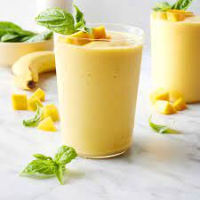

Mango Smoothie

A delicious mango smoothie for a hot and dry day. The sweet taste from the chilling mango will always make you want to make this smoothie every summery day
Ingredients
- 100g Frozen Mango
- 2 tablespoons Greek Yogurt
- 200ml milk
- 1 banana
Steps
- Cut the banana in half and throw into blender
- Put in 2 tablespoons of Greek Yogurt into blender
- Throw frozen mango into blender
- Pour milk until covering all ingredients
- Blend it for a minute
- Enjoy